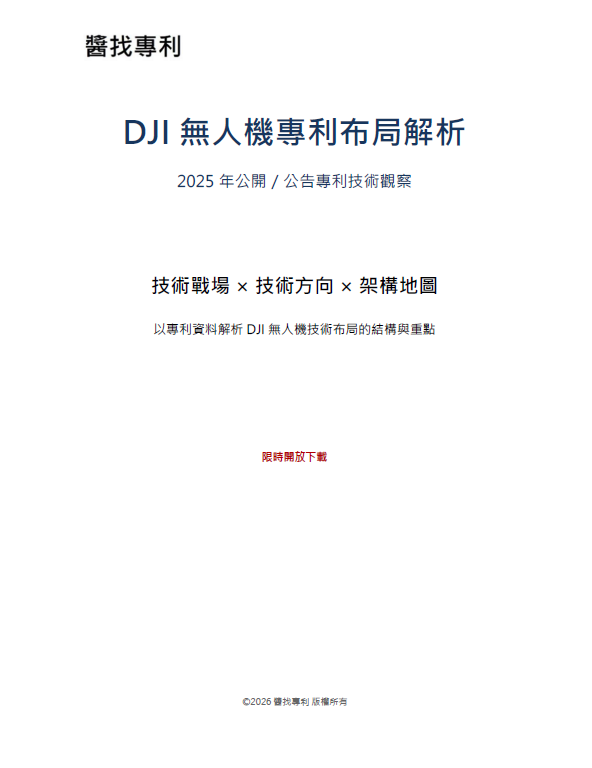

機器人
機器人技術正從傳統工業自動化演進為「具身智能」，結合人工智慧、高階感測與精密控制，賦予機器自主感知、學習及行動能力。核心技術涵蓋機器學習、電腦視覺、自主導航（AMR）及力矩控制，廣泛應用於製造、物流、醫療與仿生人形機器人領域。
機器人技術正從傳統工業自動化演進為「具身智能」，結合人工智慧、高階感測與精密控制，賦予機器自主感知、學習及行動能力。核心技術涵蓋機器學習、電腦視覺、自主導航（AMR）及力矩控制，廣泛應用於製造、物流、醫療與仿生人形機器人領域。
Apple 是一家美國科技公司，主要設計與銷售 iPhone、Mac、iPad、Apple Watch 等硬體，也提供 iOS、App Store、iCloud、Apple Music 等服務，以設計、品牌、生態系與使用者體驗聞名。
矽光子（Silicon Photonics）是一種將「光訊號傳輸」技術直接整合進半導體矽晶片的尖端技術。它突破了傳統電子晶片以「電訊號」傳輸資料的物理極限，改以「光子」代替電子進行高速、大容量的數據傳遞。隨著 AI 算力需求迎來爆發，傳統銅線傳輸在面對巨量資料時已面臨頻寬、散熱與能耗的物理瓶頸，使得矽光子技術成為解決 AI 資料中心資料傳輸瓶頸的關鍵武器。
車網互動讓電動車成為可調度儲能，智慧電網能即時協調發電、用電與儲能，提升再生能源利用、降低尖峰負載、穩定供電，並減少碳排與能源成本。
Meta Platforms, Inc. 是全球大型社群與科技平台企業。本站從美國專利觀察其在 AI、VR/AR、元宇宙、數位廣告與智慧裝置等領域的研發方向與競爭布局。
追蹤公開／公告的臺灣專利，掌握企業技術布局、申請趨勢與競爭動態，並透過文章整理重點技術主題與年度觀察。
高智發明是代表性 NPE，主要透過專利收購、管理、授權與主張權利獲利。分析其專利資料，有助於觀察潛在訴訟風險、技術聚類與授權策略。
無機 LED 以氮化鎵、砷化鎵等無機半導體材料為核心，具高亮度、高效率與高穩定性，廣泛應用於照明、顯示器、車用光源與 Micro LED。
無人飛行器結合飛控、感測、通訊與自主導航技術，應用於物流、巡檢、測繪、農業與國防。從專利資料可觀察 UAV 技術演進與應用布局。
HUD 可將車速、導航與警示資訊投影在駕駛視線前方，提升行車安全與便利性，是智慧座艙、車載 AR 與先進駕駛輔助的重要人機介面。
收錄與車網互動與智慧電網技術相關的 689 筆美國專利。泡泡矩陣圖呈現技術 × 功效布局，並提供技術・功效群組查詢、醬AI小編分析與專利資料表。
此互動儀表板建議使用桌機或平板瀏覽。
收錄 Meta Platforms 公司的 1,121 筆美國專利。泡泡矩陣圖呈現技術 × 功效布局，協助快速掌握企業研發方向。
此互動儀表板建議使用桌機或平板瀏覽。
整理 2025/04/30 前已核准公告的高智發明美國專利，協助觀察 NPE 專利資產、訴訟風險與技術聚類。
此互動儀表板建議使用桌機或平板瀏覽。
涵蓋 2025/04/30 前公開、涉及 IPC/CPC 分類 H10H 的美國無機 LED 專利，總計 68,121 筆。
此互動儀表板建議使用桌機或平板瀏覽。
涵蓋 2025/04/30 前公開、涉及 IPC/CPC 分類 B64U 的美國無人飛行器專利。
此互動儀表板建議使用桌機或平板瀏覽。
涵蓋 2025/04/30 前公開、涉及 IPC 分類 G02B 27/01 的美國 HUD 專利，提供篩選條件與資料表查詢。
此互動儀表板建議使用桌機或平板瀏覽。
以數據點呈現前百大專利申請人的 HUD 專利申請趨勢，滑鼠移至數據點可查看專利書目資訊。
此互動儀表板建議使用桌機或平板瀏覽。

本書以2025年國家知識產權局（CNIPA）公開／公告之115件DJI專利為分析範圍，從專利資料中解析其無人機相關技術布局、關鍵技術戰場與整體技術架構。 不同於一般僅以件數或IPC分類呈現的專利統計，本書進一步從技術與功效的對應關係切入，辨識本批專利中的高密度技術–功效組合，並回到專利內容層面歸納具體技術方向。後續再將分散技術方向整合為技術設計主軸，建立技術架構地圖，以呈現DJI無人機專利中所反映的任務品質、安全可靠、通訊資料鏈、載荷控制與折疊部署等設計重點。